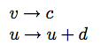

Izhikevich Neuron
The Izhikevich model neuron was developed as an efficient, powerful alternative to the integrate and fire model. The model uses two variables, a variable representing voltage potential and another representing membrane recovery (activation of potassium currents and inactivation of sodium currents).
This is a spiking neuron, so when the voltage passes a threshold value a spiking event occurs, the GUI neuron turns yellow, and the voltage and recovery variable are reset.
Since a is a parameter of the model, we use v to represent activation (voltage potential). u represents the recovery variable. Voltage is computed by integrating the following two differential equations using Euler's method:


W is weighted inputs; a and b are abstract parameters of the model.
When the voltage exceeds a threshold value, which is preset at 30, both v and u are reset, as follows:

Thus there are four parameters for this system. According to Izhikivech, "The model can exhibit firing patterns of all known types of cortical neurons with [a suitable] choice of parameters"
Links / References
Izhikevich's page discussing this model.
Eugene Izhikevich (2004), "Which Model to Use For Cortical Spiking Neurons," IEEE Transactions on Neural Networks.
Parameters
Time step
See time-step (Izhikevich uses .2 in his paper.)
A
Parameter for recovery variable.
B
Parameter for recovery variable.
C
The value for v which occurs after a spike.
D
A constant value added to u after spikes.
Add Noise
If this is set to true, random values are added to the activation via a noise generator.
Some useful Parameter Settings
(See link above for more information)
| A | B | C | D | I (Input ) | |
| Tonic spiking | 0.02 | 0.2 | -65 | 6 | 14 |
| Phasic spiking | 0.02 | 0.25 | -65 | 6 | 0.5 |
| Tonic bursting | 0.02 | 0.2 | -50 | 2 | 15 |
| Phasic bursting | 0.02 | 0.25 | -55 | 0.05 | 0.6 |
| Mixed mode | 0.02 | 0.2 | -55 | 4 | 10 |
| Spike frequency adaptation | 0.01 | 0.2 | -65 | 8 | 30 |
| Class 1 | 0.02 | -0.1 | -55 | 6 | 0 |
| Class 2 | 0.2 | 0.26 | -65 | 0 | 0 |
| Spike latency | 0.02 | 0.2 | -65 | 6 | 7 |
| Subthreshold oscillations | 0.05 | 0.26 | -60 | 0 | 0 |
| Resonator | 0.1 | 0.26 | -60 | -1 | 0 |
| Integrator | 0.02 | -0.1 | -55 | 6 | 0 |
| Rebound spike | 0.03 | 0.25 | -60 | 4 | 0 |
| Rebound burst | 0.03 | 0.25 | -52 | 0 | 0 |
| Threshold variability | 0.03 | 0.25 | -60 | 4 | 0 |
| Bistability | 1 | 1.5 | -60 | 0 | -65 |
| DAP | 1 | 0.2 | -60 | -21 | 0 |
| Accomodation | 0.02 | 1 | -55 | 4 | 0 |
| Inhibition-induced spiking | -0.02 | -1 | -60 | 8 | 80 |
| Inhibition-induced bursting | -0.026 | -1 | -45 | 0 | 80 |